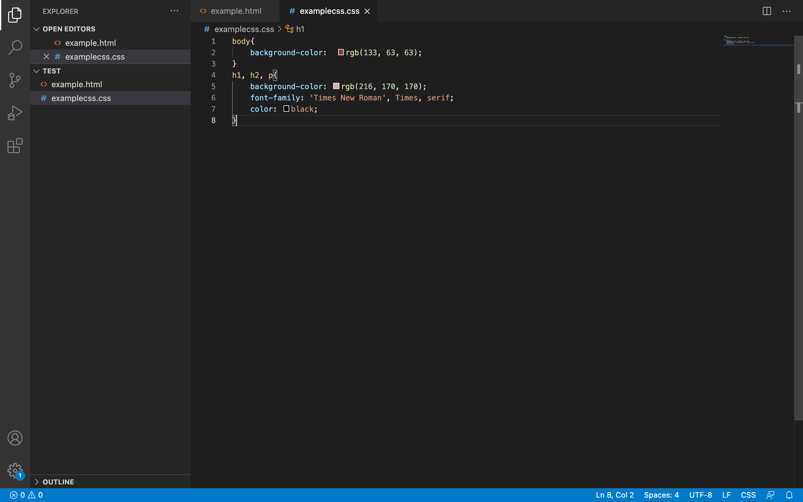

What is CSS?
CSS stands for Cascading Style Sheets
with an
emphasis placed on “Style.” While
HTML is used to structure a web document (defining things like headlines and paragraphs, and allowing you to
embed images, video, and other media), CSS comes through and specifies your document’s style—page layouts,
colors, and fonts are all determined with CSS. Think of HTML as the foundation (every house has one), and CSS as
the aesthetic choices (there’s a big difference between a Victorian mansion and a mid-century modern home).
Using CSS on the same page, not much stylish.
